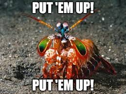
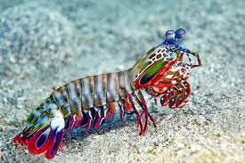

Mantis shrimps are fascinating marine crustaceans known for their vibrant colors and extraordinary abilities. They belong to the order Stomatopoda and are typically found in tropical and subtropical waters. Mantis shrimps are famous for their incredible vision, as they have some of the most complex eyes in the animal kingdom. They can detect polarized light and see a broader spectrum of colors, including ultraviolet.

Another standout feature is their specialized appendages, which come in two types: smashers and spearers. Smashers have club-like appendages that can strike with the speed of a bullet, capable of breaking shells or even glass, while spearers have sharp, spiny limbs for impaling prey. They are highly territorial, live in burrows, and are skilled predators, feeding on fish, mollusks, and crustaceans. Their combination of striking colors and remarkable abilities makes them one of the ocean’s most extraordinary creatures.

| Regular shrimp | Mantis Shrimp |
|---|---|
| Tasty | Colorful and tasty |
| Comes in three colors | Multi-colored and can see UV colors |
| Cute but not a Mantis Shrimp | Cute and a mantis shrimp |